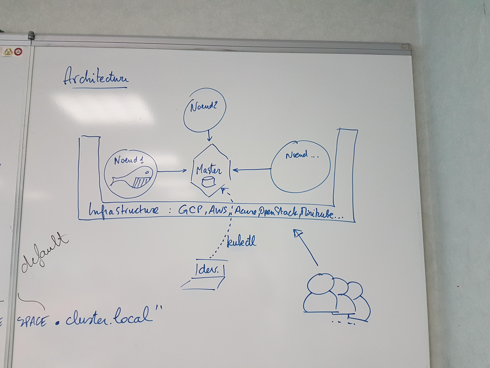
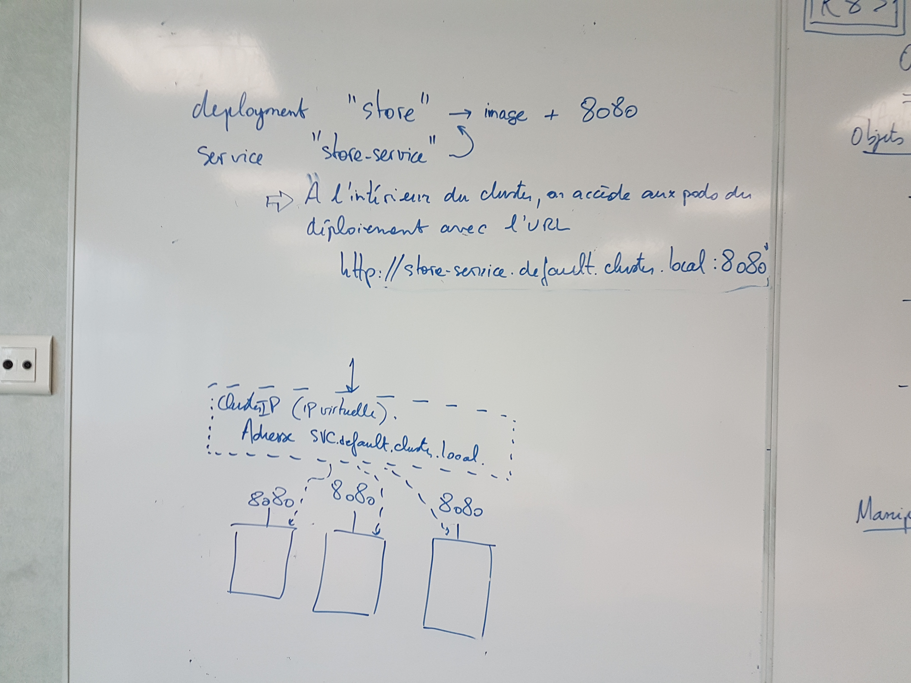
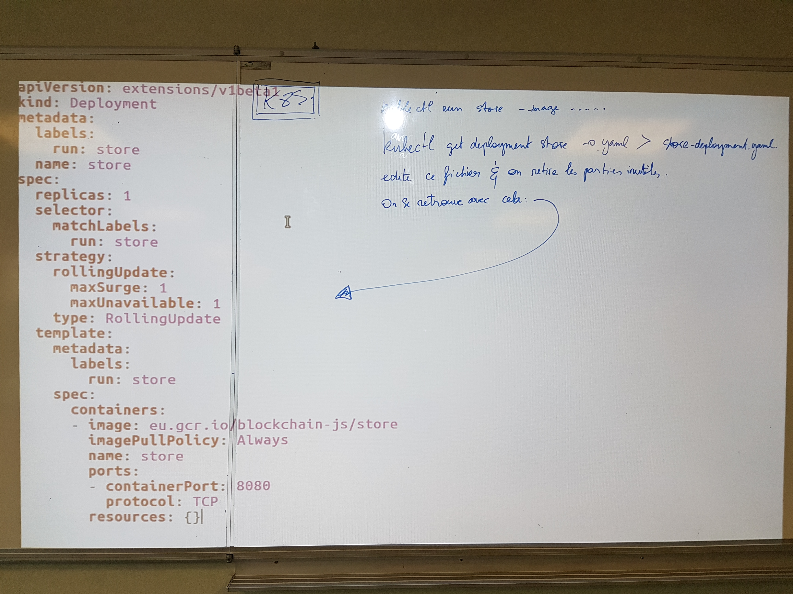

docker run -it ubuntu
apt updateKubernetes
Arnaud Tournier - @ltearno - Stack Labs - 2018 - Toulouse
Arnaud Tournier
Directeur R&D chez Stack Labs, fondateur de LTE Consulting
Twitter: @ltearno
Web: stack-labs.com
Speaker à Java One, Devoxx, GDG, JUG, GWTCon…
Rappel
Processus (et programme en général) :
execution (CPU, GPU, …)
mémoire
entrées sorties :
réseau,
disque (file system),
…
Operating System
L’OS gère les ressources de la machine et l’exécution des processus
Les processus voient et partagent les ressources
Environnement
Le programme a tout un tas de dépendances implicites :
bibliothèque runtime du langage de programmation,
parties du file system,
variables d’environnement…
Le lancement réussi d’un programme dépend donc d’un environnement adéquat
CHROOT
Change le répertoire racine d’un processus
Isolation de l’exécution du processus
A partir de là il est possible de construire l’environnement FS adéquat
Exemple
Pour commencer sous Docker :
Sinon :
sudo -iPuis :
apt install debootstrap
mkdir /test-chroot
debootstrap --include=locales-all wheezy /test-chroot http://ftp.fr.debian.org/debian
echo "coucou" > /test-chroot/coucou.txt
chroot /test-chroot /bin/bash
# S'execute dans le processus chroot-é
cat /coucou.txtPuis quitter…
LXC
On veut pallier aux limitations de chroot :
mieux isoler les processus
créer des interfaces réseaux, bridges, etc
Comprend :
namespaces : isolation des resources
cgroups : contrôle des resources
LXC - mise en oeuvre
Un pus peut avoir ses propres hostname, utilisateurs, interfaces réseau, vision des autres processus…
Ces fonctionnalités sont disponibles en standard dans le noyau Linux
Monter des containers LXC est fastidieux et passe par des étapes de :
création d’interface réseau et de bridge,
copie d’une distribution Linux,
paramétrage des systèmes de fichier,
création des cgroups
Docker
Utilise toutes ces technologies pour proposer une expérience pratique
Gère toutes les opérations précédemment citées
Un démon dockerd réside sur la machine hôte et exécute les requêtes du programme docker
Lancer un bash dans une distribution revient à la simple commande :
docker run -it ubuntu# lance l'image hello world provenant du registry officiel de Docker
docker run hello-world# lance un serveur Web hello world
docker run -p 8080 google/nodejs-hellodocker ps, docker exec, docker network create…
Microservices
Docker a favorisé le développement des microservices grâce à la facilité de reproduire l’environnement nécessaire aux applications
Le mouvement DevOps a grandement bénéficié des microservices en rendant les environnements de développement et de production (quasi) identiques
Chaque service est lancé dans un conteneur. Les conteneurs sont paramétrés pour communiquer ensemble. On scale l’application en ajoutant de nouveaux conteneurs. Ce n’est pas nouveau mais beaucoup plus facile à mettre en oeuvre que les machines virtuelles.
Problématiques
La multiplication du nombre de conteneurs à gérer a amené son lot de problématiques :
orchestration,
configuration,
liaison,
état de l’application,
gestion des volumes…
Pets vs Cattle
Il y a besoin de solutions haut-niveau pour gérer les nouvelles possibilités offertes par la containerization
Qu’est-ce que Kubernetes
Historique (Borg, besoins internes google, etc)
Conçu par Google, annoncé en 2014
Création de la CNCF
Gérer des clusters de machines
Déployer, maintenir et scaler des applications. Conçu pour être extensible et adaptable.
Abbréviations : kube, k8s,…
Vision à grosse maille :
description déclarative des déploiements
placement automatique des containers en fonction des contraintes et pré-requis déclarés par l’application
gestion des failles (les containers redémarrent automatiquement)
mise à l’échelle horizontale
découverte de services et load balancing
mises à jour en rollout et rollback
stockage
gestion de la configuration applicative
auto-healing
Ecosystème :
docker compose
docker swarm
mesos/marathon
Environnement de développement
Kubernetes met à disposition un outil kubectl
Kubernetes est platforme-agnostique et s’intègre avec différents plateformes comme par exemple :
AWS,
GCP,
OpenShift,
Minikube…
Aujourd’hui kubernetes se fonde sur un environnement GNU/Linux.
Pour GCP, outil gcloud est utilisé pour provisionner les resources.
TP 0 : prise en main
Que s’est-il passé ?
Débrief du TP en passant en revue les ressources créées pour l’occasion :
kubectl get deployment,…
Vue d’ensemble
Le développeur utilise l’API k8s (souvent avec kubectl) pour décrire l’état désiré du cluster
(applications à exécuter, quels conteneurs utiliser, nombre de répliquas,
les ressources réseau et disque etc)
Les services Kubernetes (control plan, exécuté sur les noeuds du cluster) surveillent les ressources demandées par l’application et mettent en place automatiquement celles-ci.
Le noeud master exécute kube-apiserver, kube-controller-manager et kube-scheduler
Chaque noeud esclave exécute :
kubeletqui communique avec le masterkube-proxyqui gère les services réseaux du noeud (add host name, fill IP tables,…)
Objets
Graphique illustrant l’imbrication des concepts (deployment, service, pods, …)
Labels et selectors
Cluster
L’ensemble des machines (noeuds) exécutant les services kubernetes
Ces machines hébergent les charges applicatives
Pods
Un groupe de containers s’exécutant sur une machine et en partageant les ressources : - stockage (définition de volumes), - réseau (adresse IP unique dans le cluster)
Les containers d’un même pod partage la même adresse IP et le même espace de ports TCP.
Ils peuvent communiquer entre eux par localhost et autres IPC.
Ils ont accès aux volumes partagés définis au niveau du pod (et montables dans le file system).
Les pods sont schédulés sur des noeuds. Ils sont gérés en général par des contrôleurs (Deployment, StatefulSet, DaemonSet…)
Services
Une façon d’accéder aux ports exposés par les pods
Abstraction définissant un ensemble logique de Pods et une politique d’accès
L’ensemble des pods ciblés par un service est déterminé par un Label Selector
Quatre types :
ClusterIP : expose le service sur une IP interne au cluster
NodePort : expose un port statique (et crée un service ClusterIP)
LoadBalancer : expose un service sur une IP externe (et crée un service NodePort)
ExternalIP : expose une IP externe au cluster
Services
kind: Service
apiVersion: v1
metadata:
name: my-service
spec:
selector:
app: MyApp
ports:
- protocol: TCP
port: 80
targetPort: 9376Ce service se verra attribuer une adresse IP appelée ClusterIP
L’ip du service est disponible dans les variables d’environnement ({NOM_DU_SERVICE}_SERVICE_HOST et {NOM_DU_SERVICE}_SERVICE_PORT)
Le service est accessible avec le nom SERVICE.NAMESPACE.svc.cluster.local
On peut définir une affinité de session (SessionAffinty)
Les pods ciblés par le service sont spécifiés par le selector.
Volumes
Stocker des données de manière persistante.
Namespace
Permet l’isolation des resources
Il est possible de définir des quotas par namespace
Le namespace par défaut s’appelle default. Kube utilise ses propres namespaces (kube-system et kube-public)
ReplicaSet
Réplication de plusieurs Pods.
Ces objets sont très rarement accédé par le développeur, mais par les contrôleurs de déploiement (page suivante)
Deployments
Un déploiement est une mise à jour déclarative de pods ou de ReplicaSets.
Le Deployment décrit l’état voulu, Le DeploymentController met tout en oeuvre pour y arriver.
Déploiements
apiVersion: apps/v1
kind: Deployment
metadata:
name: nginx-deployment
labels:
app: nginx
spec:
replicas: 3
selector:
matchLabels:
app: nginx
template:
metadata:
labels:
app: nginx
spec:
containers:
- name: nginx
image: nginx:1.7.9
ports:
- containerPort: 80StatefulSet
DaemonSet
Job
TP 1 : utilisation du mode impératif
Manipulation des objets kubernetes
On peut utiliser des constructions impératives. Mais k8s excelle dans la description déclarative.
kubectl apply -f directory/
Pour détruire un objet
kubectl delete -f fileName
Obtenir des informations sur un objet
kubectl get -f fileName -o yaml
Créer ses fichiers de configuration à partir de l’état courant
Exporter les objects :
kubectl get / -o yaml --export > _.yaml
Retirer les champs de status des fichiers
Ensuite, on utilise kubectl apply
Commandes courantes
Décrire un pod
kubectl describe po at-broker-srv-2526195473-qgknh
Lancer un bash sur un pod distant
kubectl exec -it at-referential-1960433735-42319 bash
Décrire un pod particulier
kubectl describe pod/at-referential-1960433735-42319 -n default
Mettre à jour un déploiement
Exemples
kubectl set image deployment/nginx-deployment nginx=nginx:1.9.1
kubectl edit deployment/nginx-deployment
kubectl rollout status deployment/nginx-deployment
kubectl scale deployment nginx-deployment --replicas=10
kubectl autoscale deployment nginx-deployment --min=10 --max=15 --cpu-percent=80
Architecture
Organisation des cluster
Kube Master + (kubelet et kubeproxy)
Authentification et autorisation
Le scheduler
Il a pour rôle d’affecter à chaque pod un ou des noeuds pour l’exécution, puis de séquencer le démarrage de ces pods.
Très important : les health check qui permettent au contrôleur de connaître le statut de chaque container, il est donc indispensable de les spécifier.
Rappel

Rappel

Rappel

Rappel

TP 2 : utilisation du mode déclaratif
Avancé
Monter une infra on premise.
Si Windows 10 pro ⇒ HyperV